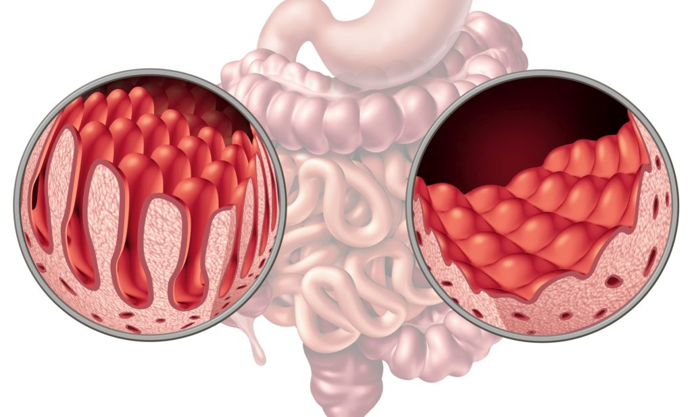
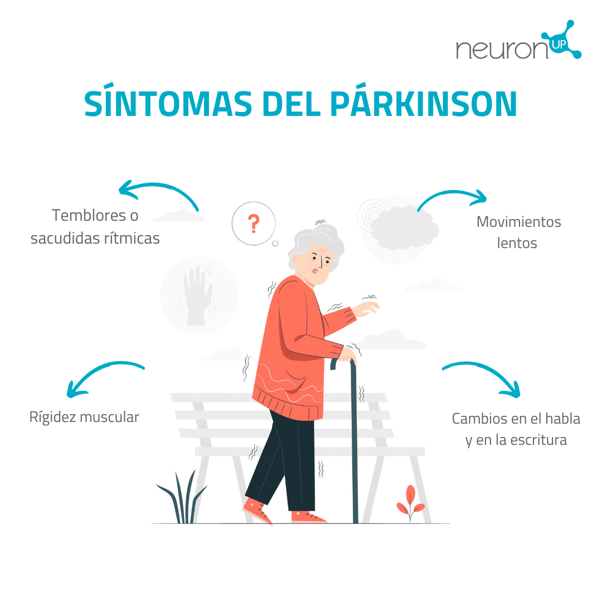

Enciclopedia Médica
En esta sección hablaremos de temas destacados de forma resumida que se encuentran en nuestra enciclopedia médica.
Temas Destacados
Artículo 1: Celiaquía
La enfermedad celíaca es un trastorno digestivo e inmunitario crónico (a largo plazo) que daña el intestino delgado...
Para más información use el mapa interactivo que se encuentra a continuación:

Para más información pulsa aquí .
Artículo 2: Parkinson
La enfermedad de Parkinson es un tipo de trastorno del movimiento...

Para más información pulsa aquí .
📄 Documento Electrónico
Para más información de MedlinePlus puede acceder al documento electrónico accesible que se muestra a continuación, tanto en formato PDF como en formato Word:
Para comprobar la accesibilidad de nuestro documento electrónico accesible puede acceder al siguiente documento no accesible y compararlo:
Enfermedades más comunes en España durante el año 2024
Para cualquier consulta contacte con nosotros a través del siguiente cuestionario .
Para añadir una nueva enfermedad rellene el siguiente formulario .
Vídeos
Versión incrustada desde YouTube
VIDEO
Versión HTML5 con subtítulos
Tu navegador no soporta el elemento video.
Versión subtitulada con Amara
Transcripciones del vídeo
🌐 Blog accesible sobre enciclopedia medica
Si no puedes visualizar el blog incrustado, puedes acceder directamente haciendo clic
aquí .